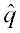
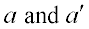

Retrieves ray data and copies it into variables.
Syntax
GET [ k [ k' ] ]
| Option | Description |
|---|---|
| k k' | number of a given ray or range of rays |
Remarks
| Register | Literal | Ray/Beam Data |
|---|---|---|
| A0,B0,C0 | X,Y,Z_DIR_B | Absolute X,Y,Z direction cosines of base ray |
| Ai,Bi,Ci | X,Y,Z_DIR_i | Relative direction vector of ith parabasal ray |
| D0 | OPL | Optical path length from start of base ray |
| E1,E2,E3 | X,Y,Z_EPOL | Components of unit polarization vector |
| F0 | FLUX | Total flux in ray/beam |
| G0 | DIVERG | Average divergence angle of beam |
| H0 | HEIGHT | Average height of beam centered on base ray |
| Ii | PREV_O_i | ith previous split object for ray/beam |
| J0 | SOURCE | Source number from which ray/beam originated |
| K0 | CURR_OBJ | Current object at which ray/beam is located |
| L0 | HITS | Total number of surfaces ray has hit (intersected) |
| M0 | MEDIUM | Medium that ray/beam is in |
| N0 | SPLITS | Number of times ray/beam has been split |
| N1 | LEVELS | Number of times ray/beam has been scattered |
| P0 | POLAR_0 | Relative modulus of fundamental beam mode |
| P1,P2 | POLAR_1,2 | Relative moduli of polarization components |
| Q0 | NUM_RAYS | Total number of ray/beams |
| Q1 | NSOURCES | Total number of original sources |
| R0 | PARENT | Number of ray from which this ray was split (parent) |
| S0 | SHAPE | Beam shape number (see SHAPES command) |
| S1 | FACTOR | Beam shape factor or number of higher modes |
| T0 | PHASE_0 | Relative phase angles of fundamental beam mode |
| T1,T2 | PHASE_1,2 | Relative phase angles of polarization components |
| U0,V0 | U,VPARAMB | Parametric coordinates of base ray position |
| W0 | WAVELEN | Wavelength of ray/beam |
| Wi | WAVLNS_i | Wavelength for ith source |
| X0,Y0,Z0 | X,Y,Z_POS_B | Global X,Y,Z coordinates of base ray |
| Xi,Yi,Zi | X,Y,Z_POS_i | Relative coordinates of ith parabasal ray |
are determined by the parameter of the current POLARIZ command. During the refraction operation, as the ray propagates, the quantities, are re-computed so that is the local s-polarization direction, and  are determined by the s and p Fresnel equations.